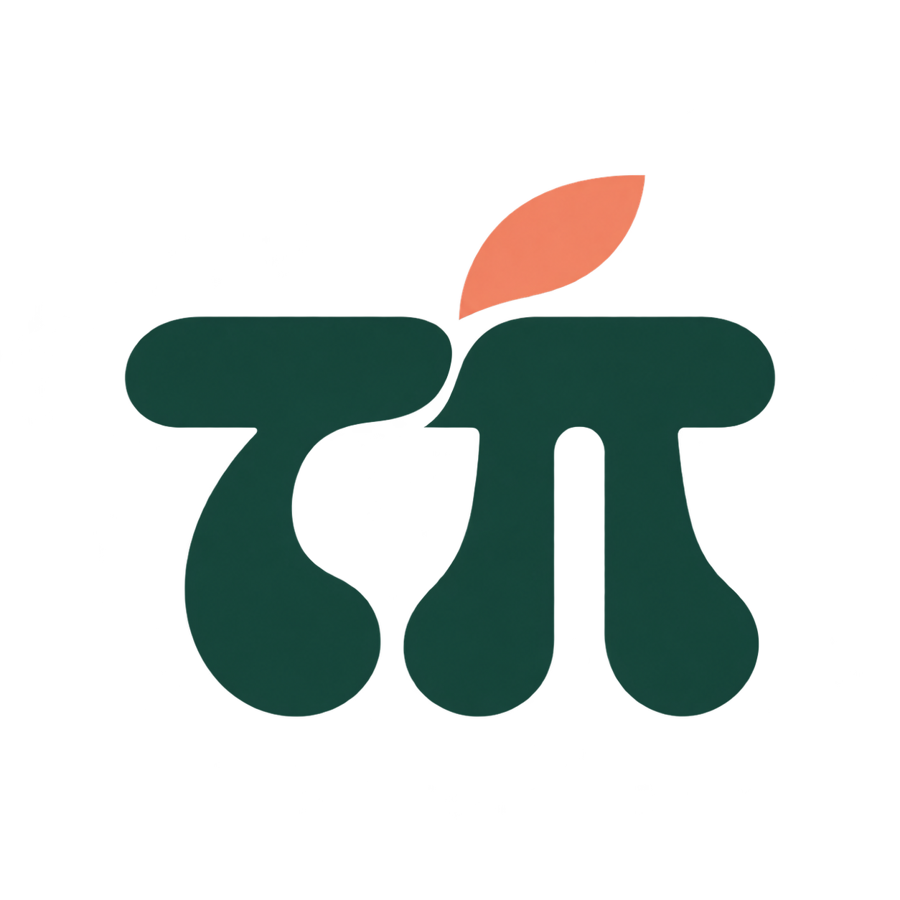

Amazon美国 · 学生实习
软件开发工程师实习
实际用过 AI 辅助开发工具。
Experience using AI-assisted development tools in academic or professional settings查看原岗位 
桃派工作室预约免费咨询为什么现在值得做？
01 提高求职竞争力
一些企业已经把 AI 实践写进岗位要求。亲手做过，简历和面试里才有具体的经历可讲。
02 CPT 审批受限
部分 CPT 实习路径受限，
在美找实习，可能变得更困难。
等待机会的同时，你也可以开始积累自己的作品。
具体审批因学校与个人情况而异。
个人项目可以展示能力，但不能替代工作授权。
一个能打开、能演示的版本
你做过的尝试、选择与修改
不是照搬教程，而是自己的判断
03 不止是简历
你遇到的那个小问题，
也许不只你一个人在意。
先做出来，让人试一试。
听听反馈，再决定要不要继续。
一个小项目，也可能长成值得投入的产品。
我们提供什么
把你的简历、经历和项目放在一个清楚的入口。让别人不只看到几行文字，还能点开作品，认识你真正做过什么。
从一页简历，
到一个完整的你。
结合专业和兴趣，找到一个值得解决的问题。一起梳理方向、控制范围、开发和测试，完成能演示的最小可用版本。
合理使用 AI 来开发，也只在有必要的地方加入 AI 功能。
做出来。
用起来。
讲清楚。
行业咨询、项目 Mock、项目相关简历修改。把“我做过”讲得更具体：为什么这样做、遇到什么问题、你贡献了什么。
按方向与实际资源确认导师和安排；完整简历修改及其他面试辅导可另外沟通。
不只被问到。
也能答得出来。
根据你的背景、项目进展和实际资源，探索合适的内推对接、孵化器申请辅导与推荐机会。
具体机会以实际匹配为准，不保证面试、录用或孵化器录取。
让一个作品，
连接更多可能。
导师背景 · 行业与创业视野
从行业视角看你的项目，
把思路、取舍和个人贡献讲清楚。
一对一咨询、项目 Mock 与项目简历指导。
以上展示导师背景及关注的行业资源，不代表机构与桃派存在官方合作或背书；具体导师与资源安排以实际匹配为准。
欢迎来，做点自己的东西
如果你正在准备实习或秋招，想为简历增加一段真实经历；
或者想积累项目、想上手 AI，却还不知道从哪里开始。
不要求你是理工科。
愿意学习 AI，愿意自己动手尝试，就欢迎来聊聊。
建议每天留出约 1 小时，亲手推进自己的项目。
li3166944467@gmail.com还没有具体 idea 也没关系。
预约信息尚未发送。若无法打开邮件应用，可复制下方内容，发送至 li3166944467@gmail.com。